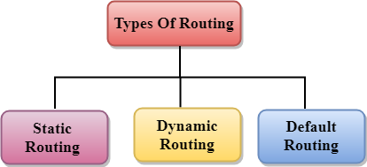

Introduction
Routing protocols, according to the OSI routing framework, are layer management protocols for the network layer that specify how routers communicate with each other to distribute information and data that helps them to select routes between any two nodes on a computer network. Data packets are forwarded through the networks of the internet from one router to the other router until they reach their destination computer. Each router has a prior knowledge only of networks(nodes) attached to it directly. A routing protocol shares this information first among it’s immediate neighbours, and then throughout the network.
There are various algorithms used for this, some of them discussed in our simulation are:

Fig. 1 Types of routing
There are various algorithms used for this, some of them discussed in our simulation are:
Static Routing:
Static routing is a form of routing that is used when a router uses a manually-configured routing entry, rather than information that gets updated dynamically(automatically). Unlike dynamic routing, static routes remain fixed and do not show any changes if the network is changed or if it is reconfigured. Static routing and dynamic routing can be found not to mutually exclusive. Both dynamic routing and static routing can be used on a router to maximize routing efficiency and to provide backups in the cases that dynamic routing information fails to be automatically updated.Uses
The different uses of static routing are as follows:- It is used to define an exit point from a router when no other routes are available which is called as a default route.
- It is used for small networks like having one or two routes. This is often more efficient because a link is not being wasted by exchanging dynamic routing information.
- It is often used as a complement to dynamic routing to provide a backup if a dynamic route is unavailable.
- It is used to help transfer routing information from one routing protocol to another.
Advantages
- Static routing keeps a little load on the CPU of the router and produces no traffic to other routers.
- It adds security because an only administrator can allow routing to particular networks only.
- No bandwidth usage between routers.
Disadvantages
- Static routes are manually configured by the administrator, so there may be a chance of mistakes in human entry.
- Static routing is not fault tolerant.
- Static routes may prevent routing protocols from working as intended. A solution is to manually modify the administrative distance.
- Static route configuration takes a long time if there are many routers. The reconfiguration can also be slow and inefficient.